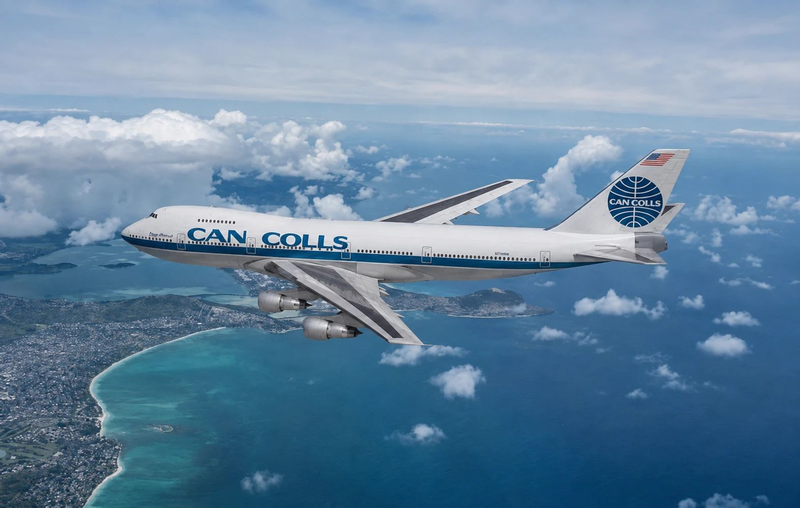

Portafoli 2026 · Branding · Disseny gràfic
PereColls
Dissenyo identitats de marca amb la seguretat gràfica dels anys 60 i 70, per a negocis d'avui.
Old values, new life.
La marca
Can Colls Disseny neix de l'esperit gràfic dels anys 60 i 70, l'aire de PanAm i Porsche, quan una marca era una promesa clara i sense soroll. Recupero aquella seguretat visual i li dono una vida nova.
Claredat
Missatge directe, sense adorns innecessaris.
Confiança
Sistemes visuals sòlids i coherents.
Caràcter
Un punt d'humor i personalitat pròpia.
Continua